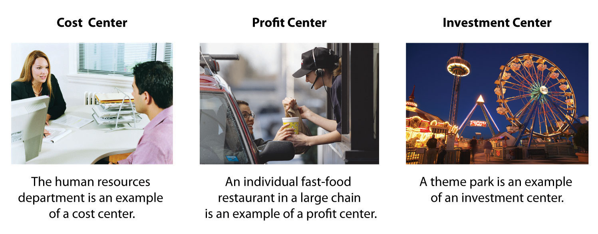
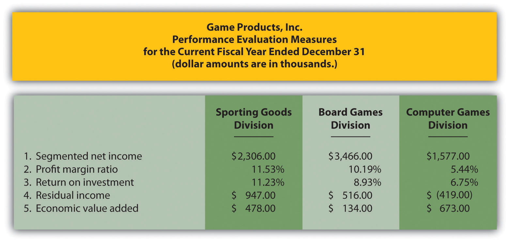
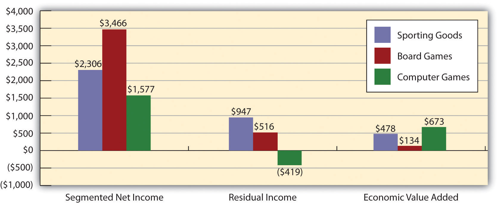
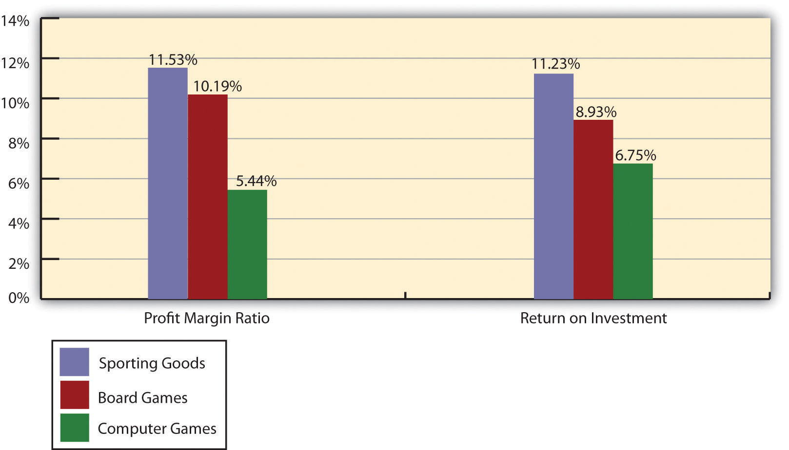

Mandy Dwyer is the president and CEO of Game Products, Inc., a producer of games and sporting goods sold to a variety of retail stores. Game Products, Inc., has three divisions: Sporting Goods, Board Games, and Computer Games. Each division is relatively autonomous with a separate manager, who independently oversees each division. Mandy Dwyer is reviewing the results of the most recent fiscal year with Larry Meske, the company’s CFO:
| Mandy: | In reviewing our segmented income statement, it looks like the Board Games division had a terrific year. Profits increased substantially over last year, more than either of the other two divisions, and overall profit for this division is well above the other two. Carla Klesko, the Board Games division manager, is to be commended for her fine work! We should consider revising her compensation plan to increase her annual bonus based on these results. |
| Larry: | Not so quick, Mandy. I agree that the Board Games division has successfully increased profits, but we must consider more than just the bottom line (profits) in determining how substantial the increase is in comparison to the other divisions. |
| Mandy: | What do you have in mind? |
| Larry: | For starters, we should consider what resources were invested in the Board Games division, and determine the return produced from these resources. As you recall, Carla made a significant investment in her division, whereas the other division managers did not. So naturally, we would expect Board Games division profits to increase by more than the other divisions. |
| Mandy: | I’ve always focused on the bottom line for each division. What performance measures do you propose we use? |
| Larry: | We have several options. Return on investment (ROI), residual income (RI), and economic value added (EVA) are three commonly used measures. Perhaps we can discuss this further next month once I’ve had a chance to pull some information together. |
| Mandy: | Excellent idea. I look forward to getting your ideas on this issue next month. |
Mandy and Larry are looking for ways to evaluate the performance of the company’s three division managers. Since each division is responsible for more than just the cost of production, as was the case in Chapter 10 "How Do Managers Evaluate Performance Using Cost Variance Analysis?", top management must evaluate how productively each division manager is using assets to produce profits. The focus of this chapter is on how to evaluate the performance of division managers within a decentralized organization.
Question: Many types of organizations decentralize operations to better manage each segment of the organization. What does it mean to decentralize operations?
Answer: The term used to describe this type of organizational structure is decentralized organizations. Decentralized organizationsOrganizations that delegate decision-making and operational responsibilities to the managers of each segment of the organization. Segments are often called divisions or subunits. delegate decision-making and operational responsibilities to the managers of each segment of the organization. (Segments are often called divisions or subunits.) For example, universities are often segmented by discipline with one manager, or dean, responsible for each discipline (physical education, social sciences, business, etc.). Retail companies are often segmented by region, with one manager responsible for each region. Service companies are often segmented by service category, with one manager responsible for each category (e.g., an accounting firm divided into audit and tax). Decentralization is not limited to a particular type of organization, and most organizations that have grown in size and complexity decentralize to some extent.
Question: Why do organizations decentralize operations?
Answer: Organizations often decentralize out of necessity as they expand. The responsibility of one manager, or group of managers, to run the entire organization can become overwhelming as the number of products offered increases.
For example, Game Products, Inc., began by selling two board games to several retail stores in the northeast United States. The company did not need to decentralize at that point because it offered only two products and the geographic region in which it sold those products was limited.
A few years later, Game Products expanded sales to Canada and the southeast Unites States, while also venturing into the computer games industry by purchasing a small maker of computer games. Although operations were not decentralized at this time—all decisions were still made at headquarters—top management was beginning to feel the strain of trying to manage two segments of the company. The decision-making process was cumbersome and slow, and the company began to miss market opportunities that would have increased sales and profits.
Two years later, Game Products decided to enter the sporting goods market, and top management and the board of directors agreed that decentralization was critical to the future success of the company. As a result, they assigned a manager to run each division. This change allowed top management to concentrate on high-level issues. such as long-range strategic planning, and it placed the decision making in the hands of managers who were intimately familiar with the operations of their individual divisions.
Although Game Products ultimately decided to decentralize operations, there are advantages and disadvantages to decentralizing. Figure 11.1 "Decentralized Versus Centralized Organizations" illustrates how operations would look at Game Products, Inc., if operations were decentralized or if they remained centralized.
Figure 11.1 Decentralized Versus Centralized Organizations

Question: What are the advantages of decentralizing operations for companies like Game Products, Inc.?
Answer: Organizations like Game Products tend to decentralize as their operations grow and become more complex. The advantages of decentralizing are as follows:
Note 11.3 "Business in Action 11.1" provides a real-life example of an organization that benefitted from decentralizing.
Advantages of Decentralizing at a Community College
Sierra College is located in one of the fastest growing counties in California. Student enrollment has increased from 5 percent to 10 percent per year over the last decade. Prior to this rapid growth, the college held each division dean responsible for most administrative duties. For example, the dean of business and technology was responsible for administrative duties, such as hiring faculty members and developing the schedule of classes to be offered each semester.
As student enrollment increased, course offerings expanded, and faculty headcount grew into the hundreds, the administrative duties became overwhelming for each division dean. As a result, management decided to decentralize further by creating department chair positions to help with the administrative duties related directly to each department. This change gave each department (business, music, computer science, etc.) more control over day-to-day activities, and it allowed the deans to focus on larger college issues, such as strategic planning and community relations. It also allowed for quicker responses to issues, such as faculty teaching assignments and classroom space utilization.
Source: Based on the author’s experience.
Question: What are the disadvantages of decentralizing operations for organizations, such as Game Products?
Answer: The results of decentralizing operations are not always positive. Three disadvantages of decentralizing are as follows:
Disadvantage of Decentralizing an Accounting Firm
Arthur Andersen was a large, decentralized accounting firm with offices located throughout the world. One or more partners operated each office independently. In 2002, Arthur Andersen had 85,000 employees worldwide. The firm was indicted in March 2002, and later found guilty, for obstructing justice by shredding tons of documents related to its audit work for Enron Corporation. As a result, Arthur Andersen agreed to cease its accounting practice in the United States in August 2002. By 2005, only 200 employees remained at Arthur Andersen to wrap up the dissolution of the firm.
Although the entire firm was indicted and found guilty of obstruction of justice, the decision to shred documents was made at the Houston office, where the bulk of the shredding took place. This serves as an extreme example of the disadvantage of decentralizing an organization. Decisions left to the division managers (“partners” in this case) can have a negative effect on the entire organization.
Note that the U.S. Supreme Court overturned the guilty verdict of the U.S. District Court in June 2005, but the damage was done and the firm did not survive.
Source: Charles Lane, “Justices Overturn Andersen Conviction,” Washington Post, June 1, 2005, http://www.washingtonpost.com.
Landscaping Services, Inc., founded and operated by Ed Barnes, has seen revenues double each year for the past three years. Although Ed has hired several laborers to ease the workload, he is still working seven days a week, 10 hours a day. Ed would like to hire a manager to assist in managing landscaping projects and has asked for your advice.
Solution to Review Problem 11.1
There are several potential disadvantages to decentralizing. Two examples follow:
There are several potential advantages to decentralizing. A few examples follow:
Question: To evaluate performance, organizations often divide operations into segments. Segments responsible for revenues, costs, and investments in assets are called responsibility centersSegments of the organization responsible for revenues, costs, and/or investments in assets and typically defined as cost centers, profit centers, or investment centers.. Responsibility centers can be based on such attributes as sales regions, product lines, or services offered. Why do organizations establish responsibility centers?
Answer: The purpose of establishing responsibility centers within organizations is to hold managers responsible for only the assets, revenues, and costs they can control. For example, a factory manager typically has control over production costs, but not sales. This manager’s responsibility center would only include production costs. A retail store manager typically has control over sales prices and costs. This manager’s responsibility center would only include revenues and costs. The level of control a manager has over a segment’s assets, revenues, and costs will help determine the type of responsibility center used for each manager.
Figure 11.2 "Three Types of Responsibility Centers" illustrates the three types of responsibility centers commonly used to evaluate segments: cost centers, profit centers, and investment centers. Each type is described in the following sections.
Figure 11.2 Three Types of Responsibility Centers
Question: What is a cost center, and what measures are used to evaluate this type of responsibility center?
Answer: A cost centerA segment of an organization responsible only for costs, but not for revenue or investments in assets. is an organizational segment that is responsible for costs, but not revenue or investments in assets. Service departments, such as accounting, marketing, computer support, and human resources, are cost centers. Managers of these departments are evaluated based on providing a certain level of services for the company at a reasonable cost.
Production departments within a manufacturing firm are also treated as cost centers. Production managers are evaluated based on meeting cost budgets for producing a certain level of goods. Chapter 10 "How Do Managers Evaluate Performance Using Cost Variance Analysis?" describes the use of cost variance analysis to evaluate cost centers within a manufacturing firm.
Question: What is a profit center, and what measures are used to evaluate this type of responsibility center?
Answer: A profit centerA segment of an organization responsible for costs and revenues, but not investments in assets. is an organizational segment that is responsible for costs and revenues (and therefore, profit), but not investments in assets. Retail stores for companies, such as Macy’s or Kmart, are treated as profit centers. Individual fast food restaurants for McDonald’s or Kentucky Fried Chicken are also examples of profit centers. Managers of profit centers are responsible for revenues, costs, and resulting profits. (Some individual retail stores and fast food restaurants may be considered investment centers if the store manager is also responsible for large investment decisions, such as enlarging the building and purchasing more equipment to accommodate additional customers. Profit center determination must be made on a case-by-case basis, and it depends on the level of responsibility assigned to the store manager.)
Methods of performance evaluation for profit centers vary. Some organizations compare actual profit to budgeted profit. Others compare one profit center to another. Also, some organizations use segmented income statement ratios, such as gross margin or operating profit, to compare current profit center performance to prior periods and to other profit centers. Chapter 13 "How Do Managers Use Financial and Nonfinancial Performance Measures?" explains how companies can use financial ratios to evaluate profit center performance.
Question: What is an investment center, and what measures are used to evaluate this type of responsibility center?
Answer: An investment centerA segment of an organization responsible for costs, revenues, and investments in assets. is an organizational segment that is responsible for costs, revenues, and investments in assets. Investment center managers have control over asset investment decisions. In many cases, investment centers are treated as stand-alone businesses. Examples of investment centers include the Chevrolet division of General Motors and the printer division of Hewlett Packard.
Several measures can be used to evaluate the performance of investment center managers, including segmented net income, ROI, RI, and economic value added (EVA). The remainder of this chapter will focus on these measures using Game Products, Inc., as the example company. Before turning to these topics, however, look at Note 11.12 "Business in Action 11.3" which indicates the challenges that accountants and managers at Hewlett-Packard face when preparing the company’s annual report.
Segment Reporting at Hewlett-Packard Company
Hewlett-Packard Company provides financial information for seven segments in its annual report. Examples of segments and related revenues (in millions) include HP Services ($15,617), Personal Systems Group ($29,166), and Imaging and Printing Group ($26,786). These segments are likely treated as investment centers where segment managers are responsible for costs, revenues, and investments in assets.
Source: Hewlett-Packard Company, “2006 Annual Report,” http://www.hp.com.
For each of the organizational segments listed, determine whether it is a cost center, profit center, or investment center. Explain your answer.
Solution to Review Problem 11.2
Question: Now that we know an investment center is an organizational segment responsible for costs, revenues, and investments in assets, where do we start in trying to evaluate the performance of investment centers?
Answer: The starting point for evaluating investment centers is typically with reviewing segmented income for each investment center (or division). Segmented incomeSegment (or division) revenues minus segment expenses. is segment revenues minus segment expenses. Top management is interested in the level of profit that each division generates, and segmented income gives them this information.
Question: In the dialogue at the beginning of the chapter, Mandy Dwyer, president and CEO, said she would like to increase the annual bonus for Carla Klesko, manager of the Board Games division, based on the division’s level of profit relative to the other divisions. How does the Board Games division profits compare with the other divisions?
Answer: Profit for the Board Games division is higher than either of the other two, as shown in Figure 11.3 "Segmented Income Statements (Game Products, Inc.)".
Figure 11.3 Segmented Income Statements (Game Products, Inc.)

Although this income statement looks much like a financial accounting income statement prepared for outside users, it is for internal use and therefore, need not comply with U.S. Generally Accepted Accounting Principles (U.S. GAAP). In fact, organizations can define income or profit many different ways when evaluating performance. For example, some might only look at operating income, others might exclude allocated overhead from operating income. Another alternative is to focus on gross margin. The point is that managerial accountants must be flexible in designing reports that best meet the needs of managers.
The president of Game Products, Inc., referred to net income when she indicated that the Board Games division performed very well for the year. Solely based on this measure, Mandy’s statement is accurate as the Board Games division has net income of $3,466,000 versus $2,306,000 for the Sporting Goods division and $1,577,000 for the Computer Games division.
Question: Although using net income for each division as a performance measure is relatively simple, there are two significant weaknesses. What are these weaknesses?
Answer: First, not all divisions are of equal size. Naturally, larger divisions should produce larger profits. It is unfair to compare net income for a smaller division with net income for a larger division for the purpose of evaluating division manager performance. With $34,000,000 in sales, the Board Games division should be expected to have higher net income than the other divisions, each of which has sales of less than $30,000,000.
One solution is to compare profit margin ratios for each division (net income ÷ sales). As shown at the bottom of Figure 11.3 "Segmented Income Statements (Game Products, Inc.)", the Sporting Goods division has the highest profit margin ratio at 11.53 percent, compared to 10.19 percent for Board Games, and 5.44 percent for Computer Games. (Chapter 13 "How Do Managers Use Financial and Nonfinancial Performance Measures?" presents several additional financial ratios used to evaluate performance.)
Because each division manager has control over revenues, costs, and investments in assets, each division is considered an investment center. Thus a second weakness in using segmented net income information to evaluate division manager performance is that net income as the sole measure of performance ignores the assets used to produce net income.
For example, suppose the Sporting Goods division only invested approximately $29,000,000 in assets to produce $2,306,000 in income, while the Board Games division invested $55,000,000 in assets to produce $3,466,000 in income. Which division had the best performance? We need a measure to evaluate how well each division performed relative to the investments made. We discuss three such measures next.
Kitchen Appliances has two divisions—a Southern division and a Northern division. The following segmented financial information is for the most recent fiscal year ended December 31 (dollar amounts are in thousands).
| Southern Division | Northern Division | |
| Sales | $5,000 | $30,000 |
| Cost of goods sold | 1,500 | 13,000 |
| Allocated overhead | 286 | 1,714 |
| Selling and administrative expenses | 2,100 | 12,000 |
Assume the tax rate is 30 percent.
Solution to Review Problem 11.3
The segmented income statements are shown as follows.

The Northern division is most profitable with net income of $2,300,000 versus net income of $780,000 in the Southern division. Using net income to evaluate which division is most profitable can be misleading because it does not consider the amount of assets needed to produce income. For example, the Northern division may have invested considerably less in assets to produce net income of $780,000.
Another reason this may be misleading is no consideration is given to the dollar amount of sales required to produce the net income for each division. Clearly the Northern division has significantly higher sales ($30,000,000 versus $5,000,000 for the Southern division) and therefore should have significantly higher net income.
The profit margin ratio for the Southern division is 15.60 percent (= $780,000 net income ÷ $5,000,000 sales), and the profit margin ratio for the Northern division is 7.67 percent (= $2,300,000 net income ÷ $30,000,000). This shows that each dollar in sales at the Southern division generates more net income (15.60 cents) than at the Northern division (7.67 cents).
Organizations prefer to use the profit margin ratio when comparing segments because it serves as an equalizer in comparing divisions with significantly different levels of sales revenue.
Question: Perhaps the most common measure of performance for managers responsible for investment centers is return on investment (ROI). What is ROI, and how is it used to evaluate investment centers?
Answer: ROIOperating income divided by average operating assets. is defined as operating income divided by average operating assets:
Note that different organizations use different measures to calculate ROI. Our goal in this discussion is to introduce one common approach, but keep in mind that organizations often make adjustments to this formula to better suit their needs.
The advantage of ROI as a performance measure is that it includes the use of assets. For example, assume 2 divisions have $10,000 in operating income. Both divisions appear to have performed equally well based on operating income. However, further review shows that Division 1 invested $200,000 in average operating assets to produce this income while Division 2 invested $400,000. Clearly, the division that invested half the amount in assets to produce the same amount of income had the best performance of the two. Comparing the ROI for each division proves this:
Let’s take a closer look at the components of the ROI calculation, operating income and average operating assets.
Question: What is operating income, and how does it differ from net income?
Answer: Operating incomeIncome produced by the division related to its daily activities; it typically excludes items, such as income tax expense, interest income, interest expense, and unusual gains or losses. is the income produced by the division from its daily activities. It excludes items used in the calculation of net income, such as income tax expense, interest income, interest expense, and any unusual gains or losses. The focus is on how well the division performed relative to its core business operations, which does not include one-time gains or losses from the sale of property, plant, and equipment for example.
Question: What are average operating assets, and how is this amount calculated?
Answer: Average operating assetsAssets the division has in place to run the daily operations of the business; it is calculated using operating asset information as follows: (Beginning period balances + Ending period balances) ÷ 2. are the assets that the division has in place to run the daily operations of the business, and this value is calculated by adding beginning period balances and ending period balances and dividing by two. Examples of operating assets include cash, accounts receivable, prepaid assets, buildings, and equipment. As long as the division uses the assets to produce operating income, they are included in the operating assets category. Examples of nonoperating assets—assets not included in this calculation—include land held for investment purposes and office buildings leased to other companies.
An average of operating assets is taken over the period being evaluated for two reasons. First, operating assets are often purchased and sold during an accounting period, and simply taking the ending balance might produce distorted, if not inaccurate, results. Second, operating income represents information for a period of time (income statements always present information for a period of time), while operating assets are presented at a point in time (balance sheets always present information for a point in time). If both of these items are to be included in one ratio (ROI), it is best to use average balance information for balance sheet items. In fact, if the information is readily available, it would be best to take an average of daily operating asset balances for the period being evaluated.
Question: Using ROI as the measure, how do the divisions at Game Products, Inc., compare with each other?
Answer: Figure 11.3 "Segmented Income Statements (Game Products, Inc.)" shows segmented income statement information for each of Game Products’ three divisions. The operating income line of this income statement provides information needed for the numerator of the ROI calculation. Figure 11.4 "Segmented Balance Sheets (Game Products, Inc.)" presents the segmented balance sheets for each division needed to calculate average operating assets.
Figure 11.4 Segmented Balance Sheets (Game Products, Inc.)

Let’s see how each division ranks using ROI. Assume all assets at Game Products, Inc., are operating assets. We use the information in Figure 11.3 "Segmented Income Statements (Game Products, Inc.)" and Figure 11.4 "Segmented Balance Sheets (Game Products, Inc.)" to calculate the ROI for each division in Figure 11.5 "ROI Calculations (Game Products, Inc.)".
Figure 11.5 ROI Calculations (Game Products, Inc.)

*Operating income amount is from segmented income statements presented in Figure 11.3 "Segmented Income Statements (Game Products, Inc.)".
**Average operating assets are calculated using the balance sheet information in Figure 11.4 "Segmented Balance Sheets (Game Products, Inc.)". Since all assets at Game Products, Inc., are operating assets, total asset amounts are used in this calculation. The calculation of average operating assets for each division is (Beginning balance of total assets + Ending balance of total assets) ÷ 2. Average operating assets for the Sporting Goods division is $29,350 (= [$30,500 + $28,200] ÷ 2).
^ROI = Operating income ÷ Average operating assets. For Sporting Goods division, 11.23 percent = $3,295 ÷ $29,350.
The ROI measures presented in Figure 11.5 "ROI Calculations (Game Products, Inc.)" show that although the Board Games division has the highest operating income, its ROI ranks in the middle of the three divisions. The Sporting Goods division has the highest ROI at 11.23 percent, Board Games is second at 8.93 percent, and Computer Games is the lowest at 6.75 percent. Since managers of each division are responsible for maximizing profit based on investments they make in assets, ROI is a reasonable approach to evaluating each manager. The Sporting Goods division manager appears to be outperforming the other two managers based on this measure.
Like most financial measures of performance, ROI can be calculated in several different ways. The components of this calculation often vary from one organization to the next. These variations are discussed next.
Question: For the purposes of the Game Products, Inc., example, we use the same definition of operating income that is used for financial reporting purposes in accordance with U.S. GAAP. However, organizations often create their own unique calculation of operating income for internal evaluation purposes. How might the internal calculation of operating income vary from U.S. GAAP?
Answer: There are several variations that organizations use when calculating operating income. Two of the more common variations are discussed next.
The segmented income statements for Game Products, Inc., are presented again in Figure 11.6 "Segmented Income Statements (Game Products, Inc.)" (these are the same segmented income statements as in Figure 11.3 "Segmented Income Statements (Game Products, Inc.)"). Notice the expense line item labeled allocated overhead (from corporate). Although we include this expense in calculating operating income, many organizations do not, particularly if division managers have no control over allocated overhead. Excluding allocated overhead has the effect of increasing ROI for each division manager and holds each division manager responsible only for expense amounts that are controllable.
Figure 11.6 Segmented Income Statements (Game Products, Inc.)

Review Figure 11.6 "Segmented Income Statements (Game Products, Inc.)" and notice the line item labeled income tax expense. Although we do not include income tax expense in the operating income calculation, some organizations prefer to include this item. Including after-tax expense reduces ROI for each division manager (assuming each division is profitable).
The point here is that the needs of management determine how to define operating income. We will use the U.S. GAAP definition, presented as operating income in Figure 11.6 "Segmented Income Statements (Game Products, Inc.)", throughout this chapter unless indicated otherwise.
Question: For Game Products, Inc., we assume all assets are operating assets. That is, all assets are used in the daily operations of the business. As discussed earlier, assets that are not used in the daily operations of the business, such as land held for investment or buildings sublet to other companies, are not included in this calculation. The average is found by taking the beginning balance plus ending balance and dividing by two. The issue in this calculation focuses on long-term assets that are depreciated over time. What options exist in valuing long-term assets for the purpose of calculating ROI?
Answer: There are two common approaches to valuing long-term assets when calculating ROI. Each approach is discussed next.
In the Game Products, Inc., example, we use the net book value of long-term assets to calculate operating assets. That is, accumulated depreciation is subtracted from the original cost on the segmented balance sheet in accordance with U.S. GAAP. The balance sheet presented in Figure 11.4 "Segmented Balance Sheets (Game Products, Inc.)" shows this in the line item labeled property, plant, and equipment, net. The advantage of using net book value is that the information is easily obtained from the financial records.
The problem with this approach is division managers with older assets that have been substantially depreciated have an advantage over division managers with newer assets that have not been significantly depreciated. Older assets have a lower net book value (cost – accumulated depreciation) than newer assets, which reduces average operating assets in the denominator and increases ROI.
For example, assume two divisions have identical operating income for the year and identical assets. However, Division 1 has been in operation for many more years than Division 2 and thus has far more accumulated depreciation on long-term assets. This results in a lower net book value on long-term assets for Division 1 as shown in the following:

Assuming all other assets are identical, and both divisions have identical operating income, Division 1 will have a higher ROI simply because long-term assets are older and have more accumulated depreciation, thereby reducing average operating assets in the denominator. (Reducing the denominator increases the ratio.)
An additional weakness in using net book value to calculate average operating assets is the disincentive it creates for division managers to replace old and inefficient long-term assets, such as equipment and machinery. Although new equipment purchases may be needed to improve efficiency and to remain competitive, the short-term impact is to reduce ROI. (Older equipment will have a lower net book value than identical newer equipment. Thus replacing old equipment will decrease ROI.)
If division managers are evaluated based on ROI, using net book value tends to discourage investments in long-term assets, often at the expense of the organization’s long-term profitability.
An alternative approach in calculating ROI is to use gross book value in the average operating assets calculation. Gross book value simply refers to the original cost of long-term assets and ignores accumulated depreciation.
In our example of two divisions with identical assets and identical operating income, the same original cost amount is used in calculating average operating assets. Division 2 is not penalized in the denominator for having newer assets and less accumulated depreciation.

Although both net book value and gross book value are used in practice, we will use net book value throughout this chapter unless indicated otherwise. “Key Equation: Variations of ROI Calculation” summarizes the issues surrounding the calculation of ROI.
Variations of ROI Calculation
*The U.S. GAAP definition of operating income is used for the numerator. However, organizations often calculate operating income differently. Some exclude allocated overhead while others may include income tax expense to get after-tax operating income.
**Average operating assets includes only those assets used in the daily operations of the business. Long-term assets are valued at net book value. However, valuation of long-term assets varies from one organization to the next. Some use gross book value rather than net book value.

Source: Photo courtesy of Rod Ramsey, http://www.flickr.com/photos/rdrcollection/2078536386/
Internal Performance Measures at General Electric
General Electric Company provides financial information for six segments in its annual report. Segments include Infrastructure, Commercial Finance, GE Money, Healthcare, NBC Universal, and Industrial. The company’s annual report indicates that “segment profit is determined based on internal performance measures used by the Chief Executive Officer to assess the performance of each business in a given period. Segment profit excludes or includes interest and other financial charges and segment income taxes according to how a particular segment’s management is measured.”
This statement reaffirms the point that companies tailor performance measures to meet the needs of each individual segment. For example, General Electric excludes interest and other financial charges in measuring segment net income for some segments, such as Healthcare, NBC Universal, and Industrial, while including interest and financial charges for other segments, such as Commercial Finance and GE Money.
Source: General Electric, “2006 Annual Report,” http://www.ge.com.
This is a continuation of Note 11.18 "Review Problem 11.3" for Kitchen Appliances. Recall that Kitchen Appliances has two divisions broken out by region—a Southern division and a Northern division. The following segmented income statement is for the most recent fiscal year ended December 31 (you were asked to prepare this income statement in Note 11.18 "Review Problem 11.3").

Segmented balance sheets for Kitchen Appliances appear as follows.

Solution to Review Problem 11.4
(All dollar amounts are in thousands.)
Average operating assets are calculated in the following. Note that land held for sale is not an operating asset and thus must be deducted from total assets to find operating assets.

*$9,600 = ($9,400 ending balance + $9,800 beginning balance) ÷ 2.
**$41,600 = ($40,600 ending balance + $42,600 beginning balance) ÷ 2.
ROI is calculated as follows:

*Operating income is provided in the segmented income statement.
**Average operating assets is calculated in requirement 1.
^ROI = Operating income ÷ Average operating assets. For Southern division, 11.60 percent = $1,114 ÷ $9,600.
Question: How does breaking ROI down into two separate measures help division managers improve their division’s ROI?
Answer: Many companies break ROI down into two ratios; operating profit margin and asset turnover. Each of these measures can be used to evaluate strengths and weaknesses of ROI within each division.
Operating profit marginThe ratio of operating income to sales. is the ratio of operating income to sales. It provides information about how much operating profit is being produced for each dollar of sales. Asset turnoverThe ratio of sales to average operating assets. is the ratio of sales to average operating assets. It provides information about how much revenue each dollar invested in average operating assets produces.
These two ratios can be multiplied by each other to find the ROI as follows:
Breaking out ROI into these two ratios provides information that helps division managers identify areas for improvement. ROI can be improved by increasing the operating profit margin, which focuses solely on income statement information. ROI can also be improved by increasing asset turnover, which focuses on the division’s use of operating assets to produce sales.
Question: How are these ratios used to evaluate the three divisions at Game Products, Inc.?
Answer: Operating profit margin, asset turnover, and ROI calculations for Game Products, Inc., are shown in Figure 11.7 "Operating Profit Margin, Asset Turnover, and ROI for Game Products, Inc.". Notice the resulting ROI for each division is the same as the ROI shown in Figure 11.5 "ROI Calculations (Game Products, Inc.)" except for slight differences attributed to rounding.
Figure 11.7 Operating Profit Margin, Asset Turnover, and ROI for Game Products, Inc.

*From Figure 11.3 "Segmented Income Statements (Game Products, Inc.)".
**From Figure 11.5 "ROI Calculations (Game Products, Inc.)".
Figure 11.7 "Operating Profit Margin, Asset Turnover, and ROI for Game Products, Inc." shows that Sporting Goods has the highest operating profit margin at 16.48 percent compared to Board Games (14.56 percent) and Computer Games (7.77 percent). However, Computer Games has the highest asset turnover at 0.87 compared to Sporting Goods (0.68) and Board Games (0.61).
This information helps each division manager identify strengths and weaknesses. For example, the Computer Games division has excellent asset turnover relative to other divisions, but has a very low profit margin. The manager of this division must look for ways to improve the profit margin for its products (e.g., increase prices, reduce operating expenses, or both).
Another example is the Sporting Goods division, which has an excellent profit margin, but relatively low asset turnover. The manager of this division must look at ways to improve the utilization of assets to increase turnover.
ROI is defined as operating income divided by average operating assets as shown in the following equation:
This measure provides an assessment of how effectively each division is using operating assets to produce operating income. ROI can also be broken into two separate ratios, operating profit margin and asset turnover, which are multiplied together to get ROI as follows:
Many variations of the ROI calculation are used in practice depending on the nature of the organization.
Use the information in Note 11.26 "Review Problem 11.4" for Kitchen Appliances to complete the following requirements.
Solution to Review Problem 11.5
(All dollar amounts are in thousands.)

*From Note 11.26 "Review Problem 11.4" data.
**From Note 11.26 "Review Problem 11.4" solutions, part 1.
^Due to rounding, ROI percent is slightly different than when computed in Note 11.26 "Review Problem 11.4".
Question: Although ROI is commonly used as a divisional performance measure, some division managers dislike this measure. Why do some division managers prefer not to use ROI as a performance measure?
Answer: Some managers dislike ROI because it can lead to decisions that benefit the division but hurt the organization as a whole. Division managers have an incentive to turn down investments that exceed the company’s minimum required rate of return but are below the division’s current ROI, mainly because ROI trends are often used to evaluate managers. For example, assume the manager of a division is evaluated based on ROI, and the division currently has an ROI of 20 percent:
The company’s minimum required rate of return is 10 percent, and the division manager is presented with an investment opportunity expected to yield an ROI of 15 percent. This investment totals $70,000 and annual operating profit will be $10,500 (15 percent ROI = $10,500 ÷ $70,000). Although this investment is well above the company’s minimum required rate of return, the division manager will likely not make the investment since the division’s overall ROI will decline from 20 percent to 17.9 percent:
If evaluated solely based on ROI, the division manager would prefer to invest only in projects that increase the division’s ROI above 20 percent. In fact, the division manager has an incentive to shed all investments yielding less than 20 percent, even if the investments are producing a return above the company’s minimum requirement of 10 percent. An alternative measure to ROI, called residual income (RI), helps to mitigate this apparent conflict.
Question: What is RI, and how does it help to prevent the conflict associated with ROI?
Answer: RIThe dollar amount of division operating profit in excess of the division’s cost of acquiring capital to purchase operating assets; it is calculated as Residual income = Operating income − (Percent cost of capital × Average operating assets). is the dollar amount of division operating profit in excess of the division’s cost of acquiring capital to purchase operating assets. The calculation is as follows:
Rather than using a ratio to evaluate performance, RI uses a dollar amount. As long as an investment yields operating profit higher than the division’s cost of acquiring capital, managers evaluated with RI have an incentive to accept the investment. The manager’s goal is to increase RI from one period to the next.
Notice that operating income and average operating assets used here to calculate RI are the same measures used in the ROI calculation presented earlier. The one new item, percent cost of capitalThe company’s percentage cost to obtain investment funds., is the company’s percentage cost to obtain investment funds (often called capital). For example, a company that raises funds by issuing bonds would use the interest rate associated with the bonds in establishing its percent cost of capital. We will always provide the percent cost of capital in this chapter, leaving detailed discussions of its calculation to more advanced courses. Note that several sources provide cost of capital information by industry. One source is the Leonard N. Stern School of Business at New York University (http://pages.stern.nyu.edu/~adamodar/New_Home_Page/datafile/wacc.htm).
Let’s take another look at the division that rejected an investment yielding an ROI higher than the company’s minimum required rate of return of 10 percent but lower than the division’s current ROI of 20 percent. Assume the company’s percent cost of capital is the same as its minimum required rate of return of 10 percent. Three RI calculations are provided as follows, (1) RI before the new investment, (2) RI from the new investment, and (3) RI after the new investment. (Note that some organizations make adjustments to the cost of capital to determine the minimum required rate of return. Throughout this chapter, assume percent cost of capital is the same as minimum required rate of return unless stated otherwise.)
Since the manager’s goal is to continually increase RI, the proposed investment would be accepted resulting in an increase of $3,500 in RI (= $13,500 − $10,000). As shown in this example, using RI as a performance measure is an effective way to minimize the conflict between company goals and division goals that arise using ROI. Rather than maximizing ROI, division managers focus on increasing RI. Managers are more likely to accept investment proposals that have a return greater than the company’s minimum required rate of return, regardless of the impact on the division’s ROI.
Question: Although RI resolves some of the problems of using ROI as a performance measure, it does not provide an efficient means for comparing divisions. What is the problem with using RI to compare divisions?
Answer: Similar to the problem encountered with using segmented net income to compare divisions, RI is stated in dollars (or some other currency) rather than as a ratio. One division may have high RI simply because it has a larger asset base, which produces higher revenues. Thus division managers should be evaluated based on how effectively they increase RI from one period to the next, perhaps in percentage growth, and not on how their RI compares to other divisions.
Most organizations that use RI also use ROI. Using both measures has the benefit of comparing one division to another by using ROI and minimizes the conflict between company goals and division goals by using RI.
Question: Let’s revisit Game Products, Inc., and calculate RI for each of the three divisions. How did the three divisions perform using RI as the measure?
Answer: Figure 11.8 "RI Calculations (Game Products, Inc.)" shows the RI calculation for each division at Game Products, Inc., assuming a cost of capital of 8 percent. Notice that Sporting Goods and Board Games have positive RI, which indicates both divisions are producing operating income above and beyond the minimum required rate of return. Since the Computer Games division has negative RI, this division is not producing enough operating income to achieve the minimum required rate of return.
Having positive RI is reasonable for Sporting Goods and Board Games since both divisions have an ROI above the 8 percent minimum required rate of return (as shown back in Figure 11.7 "Operating Profit Margin, Asset Turnover, and ROI for Game Products, Inc."). It is also reasonable that Computer Games has negative RI since the division’s ROI is less than 8 percent.
Figure 11.8 RI Calculations (Game Products, Inc.)

*From Figure 11.3 "Segmented Income Statements (Game Products, Inc.)".
**From Figure 11.5 "ROI Calculations (Game Products, Inc.)".
RI is the dollar amount of division operating profit in excess of the division’s cost of acquiring capital to purchase its operating assets. The calculation is as follows:
Operating income and average operating assets used to calculate ROI are also used here to calculate RI. The percent cost of capital is new and represents the company’s percentage cost to obtain investment funds. The goal is for each division manager to increase RI over time.
This is a continuation of the Kitchen Appliances example presented in Note 11.18 "Review Problem 11.3", Note 11.26 "Review Problem 11.4", and Note 11.33 "Review Problem 11.5". Financial information for Kitchen Appliances is provided again as follows. Assume the cost of capital rate is 6 percent.


Solution to Review Problem 11.6
All dollar amounts are in thousands.

*From Note 11.26 "Review Problem 11.4" data.
**From Note 11.26 "Review Problem 11.4" solutions, part 1.
Question: Another measure of performance similar to residual income (RI) is called economic value added. What is economic value added, and how is it used to evaluate divisions?
Answer: Economic value added (EVA)Similar to RI, and it is defined as Economic value added = Net operating profit after taxesadjusted − (Percent cost of capital × Average operating assetsadjusted) was created and trademarked by Stern Stewart & Company, a management consulting firm, and is defined as follows (additional information can be found at Stern Stewart & Company’s Web site: http://www.sternstewart.com).
Although the calculation is similar to RI, adjustments are made to the financial information to better reflect the economic results of the division. Stern Stewart & Company created EVA to provide financial information without the “anomalies” that result from following U.S. GAAP. One example of an anomaly is the expensing of research and development (R&D) costs even though R&D breakthroughs often benefit companies in future years.
There are two distinct differences in calculating EVA compared to RI. First, operating profit is calculated net of income taxes. Finding operating income after taxes simply requires deducting income taxes from operating income. Second, adjustments are made to operating income and average operating assets. Although more than 150 possible adjustments can be made, most firms limit adjustments to 15 or less.
Three examples of adjustments to be considered when using EVA are related to research and development (R&D), advertising, and noninterest bearing current liabilities.
These three items are provided as examples of adjustments proposed by EVA advocates. However, the adjustments made depend on the organization since EVA calculations are modified to fit the needs of the organization.
Question: How is EVA calculated for the divisions at Game Products, Inc.?
Answer: Figure 11.9 "Income Statement and Balance Sheet Information (Game Products, Inc.)" provides the segmented income statements and segmented balance sheet information for each division. These amounts were used earlier in the chapter to calculate segmented net income, ROI, and RI. Notice that research and development costs are now shown as a separate line item on the income statement, and average balances are shown on the balance sheet rather than beginning and ending balances. (Average balances are simply beginning balances plus ending balances divided by two.)
To simplify our analysis, we make only two adjustments—one for research and development and one for noninterest bearing current liabilities. The management believes research and development activities benefit future periods and would like to capitalize R&D costs and amortize these costs over several years. In addition, all current liabilities are noninterest bearing liabilities and as such will be deducted from average operating assets.
The impact of these two adjustments that must be made to the financial information presented in Figure 11.9 "Income Statement and Balance Sheet Information (Game Products, Inc.)", described as follows, is shown in Figure 11.10 "EVA Calculations (Game Products, Inc.)".
Adjustment 1. On the balance sheet, capitalized R&D costs will increase average operating assets by the unamortized amount of $400,000 for Sporting Goods, $1,200,000 for Board Games, and $2,400,000 for Computer Games. On the income statement, R&D expense for the year shown in Figure 11.9 "Income Statement and Balance Sheet Information (Game Products, Inc.)" is added back to operating income; R&D amortization expense for one year will be deducted as an expense. R&D amortization expense for the year is $100,000 for Sporting Goods, $300,000 for Board Games, and $600,000 for Computer Games. (Note for the purposes of this chapter, amortization expense amounts will be given. Detailed calculations are left to more advanced cost accounting textbooks.)
Since net operating profit after taxes (NOPAT) is used in the EVA calculation, we must remember to calculate NOPAT after making the R&D adjustments. Also, assume this is the first year calculating EVA. Thus Game Products has decided not to make any adjustments related to previous years’ R&D expenditures.
Figure 11.9 Income Statement and Balance Sheet Information (Game Products, Inc.)

Figure 11.10 "EVA Calculations (Game Products, Inc.)" shows the adjustments, and the resulting EVA calculation for each division. Assume the company’s cost of capital rate is 8 percent. This is the same rate that was used for calculating RI.
Figure 11.10 EVA Calculations (Game Products, Inc.)

*From Figure 11.9 "Income Statement and Balance Sheet Information (Game Products, Inc.)".
Question: How did each of the three divisions perform using EVA as the measure?
Answer: As shown at the bottom of Figure 11.10 "EVA Calculations (Game Products, Inc.)", all three divisions have positive EVA amounts, which indicates all three have NOPAT (adjusted) in excess of each division’s cost of investment funds (adjusted).
Recall from the example in Figure 11.8 "RI Calculations (Game Products, Inc.)" that Computer Games was the only division with negative RI. This negative amount turns to a positive amount using EVA mainly because research and development costs are capitalized and amortized over future years rather than expensed as incurred. Because the Computer Games division had significant research and development costs, and these costs were backed out and recorded as an asset using EVA, NOPAT (adjusted) increased significantly. This caused the EVA amount for Computer Games to become positive.
Question: While EVA is no doubt a popular method for evaluating investment centers, and companies as a whole, there are weaknesses in its approach. What are these weaknesses?
Answer: As stated earlier, EVA is similar to RI except adjustments are made to operating income and average operating assets to offset accounting anomalies created by U.S. GAAP. Critics of EVA argue that U.S. GAAP was established for a variety of reasons, one of which was to provide a set of reasonable and objective accounting rules to be followed when recording economic events. Modifying U.S. GAAP to calculate EVA strays from the objectivity provided by U.S. GAAP.
For example, U.S. GAAP requires R&D and advertising costs to be expensed in the period incurred because it is very difficult and subjective to estimate the future benefit these activities may provide. EVA adjustments described earlier for R&D and advertising costs depart from U.S. GAAP. EVA recommends that these costs be capitalized and amortized over the useful life of the activity. This leads to different interpretations of what the useful life should be. Managers now have an incentive to stretch useful lives out as far as possible to minimize amortization expense taken each period.
As with any performance measure, EVA has advantages and disadvantages. The key is to develop a measure that promotes behavior desired by top management and to provide consistency in evaluating managers.
EVA is simply an extension of RI. Adjustments are made to operating income and average operating assets. EVA is calculated as follows:
This is a continuation of the Kitchen Appliances example used in previous review problems. Top management of Kitchen Appliances has decided to use EVA as a performance measure for its division managers. The cost of capital rate is 6 percent.
Assume management will make three adjustments to calculate EVA as follows:
Segmented income statements and balance sheet average amounts are presented next.

Solution to Review Problem 11.7
The EVA calculation is as follows:

Question: At the meeting described at the beginning of the chapter between Mandy Dwyer (president and CEO) and Larry Meske (CFO), Mandy wanted to revise the compensation plan for the manager of the Board Games division to increase her bonus because profits had increased significantly compared to prior years. Larry suggested using measures other than segmented net income to evaluate each division and asked for time to gather additional information. What information did Larry gather, and how does this additional information help Mandy evaluate each division?
Answer: Larry assembled the information using the five methods of evaluating investment centers presented in this chapter: (1) segmented net income, (2) profit margin ratio, (3) return on investment (ROI), (4) residual income (RI), and (5) economic value added (EVA). These five measures have been calculated for each division of Game Products, Inc., and are summarized in Figure 11.11 "Five Performance Measures at Game Products, Inc.".
Figure 11.11 Five Performance Measures at Game Products, Inc.
Figure 11.12 "Comparison of Income Performance Measures for Each Division at Game Products, Inc." shows a comparison of the three divisions for segmented income, RI, and economic value added. Figure 11.13 "Comparison of Profit Margin Ratio and Return Investment for Each Division at Game Products, Inc." shows a comparison of the three divisions for the profit margin ratio and ROI.
Figure 11.12 Comparison of Income Performance Measures for Each Division at Game Products, Inc.
Figure 11.13 Comparison of Profit Margin Ratio and Return Investment for Each Division at Game Products, Inc.
When Mandy and Larry meet again a month later, Larry has the difficult task of explaining the information to Mandy and recommending a course of action.
| Mandy (president and CEO): | Larry, let’s begin where we left off at our last meeting. What do you have for me with regard to performance evaluation measures we might use for our division managers? |
| Larry (CFO): | Here is a summary of five measures I think can be useful if used correctly (see Figure 11.11 "Five Performance Measures at Game Products, Inc."). As you suggested, Mandy, the starting point is segmented net income, which is shown on line one. The Board Games division has the highest net income and looks to be a strong performer in this regard. |
| Mandy: | What is the ratio shown on line two? |
| Larry: | This is the profit margin ratio. It is a much better measure to evaluate the profitability of each division relative to sales. This measure shows the Sporting Goods division produced the highest profit for each dollar in sales with a ratio of 11.53 percent. Board Games is second at 10.19 percent and Computer Games is last at 5.44 percent. |
| Mandy: | I see. What about the use of assets? Each division is responsible for investments in assets and we would like to know how effective each division is in producing income with these assets. Is this where ROI comes in? |
| Larry: | Yes. As shown on line three, the Sporting Goods division is making the best use of its operating assets with an ROI of 11.23 percent. Board Games is second at 8.93 percent, and Computer Games is last at 6.75 percent. |
| Mandy: | So you’re telling me Sporting Goods is doing better than the other two divisions, even though Board Games has the highest net income? |
| Larry: | Yes, Sporting Goods is the most effective at using assets to produce profit. |
| Mandy: | What are the last two measures you show here? |
| Larry: | Both of these last two measures also consider asset use in the calculation. As shown on line four, Sporting Goods had the best performance by producing $947,000 in RI compared to $516,000 at Board Games and $(419,000) at Computer Games. |
| Mandy: | Computer Games has negative RI? |
| Larry: | Yes. However, you will notice that EVA shown on line five presents a different picture. |
| Mandy: | Why? |
| Larry: | Computer Games has high research and development costs each year—it’s the nature of the industry. U.S. GAAP requires these costs to be expensed when incurred. EVA suggests recording R&D costs as an asset and amortizing the costs over the useful life of R&D activities. Since Computer Games has much higher R&D costs than the other divisions, the numbers changed dramatically relative to the other divisions. Also, after-tax income is used rather than operating income, and average assets are adjusted as well. |
| Mandy: | Seems as if there is an awful lot of subjectivity in using EVA. |
| Larry: | Yes, there is. If we choose to use EVA as one of our measures, management must meet to discuss and agree upon the adjustments to be made. |
| Mandy: | Larry, thanks for your analysis. I’m beginning to understand the importance of including asset use in our performance measures. Where do we go from here? |
| Larry: | I like the first three measures—net income, profit margin ratio, and ROI. They are widely used in industry, and managers tend to understand the nature of these measures. The last two measures are also useful and should not be overlooked. My recommendation is to meet with the division managers to develop a comprehensive incentive compensation plan. The key is to develop a plan that motivates our managers to achieve company goals. |
| Mandy: | I like the idea! Let’s meet next week. |
Question: Many companies have independent divisions that transfer goods or services from one division to another. If division managers are evaluated based only on division results using measures, such as segmented net income, profit margin ratio, or return on investment (ROI), conflicts can arise causing managers to take a course of action that benefits the division but hurts the company as a whole. For example, a division manager may decide to purchase raw materials from an outside supplier even though the same materials can be produced at a lower cost by another division within the company (the other division’s manager refuses to sell the materials at a reduced price because she is evaluated based on her division’s profits!). How should a company establish transfer pricing to avoid this kind of conflict?
Answer: The price used to value the transfer of goods or services between divisions within the same company is called a transfer priceThe value assigned to the transfer of goods or services between divisions within the same company.. Several different approaches can be used to establish transfer prices between divisions. The goal is to establish a transfer pricing policy that encourages managers to do what is in the best interest of the company while also doing what is in the best interest of the division manager (this is called goal congruence). Several common approaches are presented next.
Question: How does the general economic transfer pricing rule help organizations to establish an appropriate transfer price?
Answer: The general economic transfer pricing rule attempts to establish guidelines for divisions to maximize overall company profit. This rule states the transfer price should be set at differential cost to the selling division (normally variable cost), plus the opportunity cost of making the sale internally (none if the seller has idle capacity or selling price minus differential cost if the seller is at capacity). This rule is summarized in “Key Equation: Economic Transfer Pricing Rule.”
Economic Transfer Pricing Rule
Let’s look at an example illustrating how to establish a reasonable transfer price using the economic transfer pricing rule. Umbrellas, Inc., has two divisions—Assembly and Marketing. In the past, all transfers of umbrellas from Assembly to Marketing were valued at the variable cost of $6 each. However, the Assembly division manager would like to raise the price to $9 per unit.
Which transfer price should be used to maximize company profit, $6 or $9? The answer depends on whether the selling division (Assembly) is below capacity or at capacity.
Question: Assume Assembly is below capacity. This means there is no opportunity cost of selling internally since no outside sales are forgone as a result of the transaction. What is the appropriate transfer price in this scenario?
Answer: Given this set of circumstances, the Assembly division should set the transfer price at its variable cost of $6 per unit as shown in “Key Equation: Transfer Pricing When below Capacity (Umbrellas, Inc.).” This ensures Marketing does not purchase the umbrellas from another supplier at an amount greater than Umbrella, Inc.’s variable cost.
Transfer Pricing When below Capacity (Umbrellas, Inc.)
*This is the variable cost for Assembly to produce each umbrella.
**Opportunity cost is zero since no outside sales are forgone as a result of making this internal sale.
If Assembly sets the transfer price higher than $6 per unit ($9 for example), thereby violating the economic transfer pricing rule, the risk is that Marketing might find another company willing to provide the umbrellas for an amount less than $9 and higher than $6. If Marketing chooses to buy umbrellas from an outside supplier for $7, for example, profit declines at Umbrella, Inc., because the company paid $1 more than necessary for each umbrella ($1 = $7 outside supplier price − $6 Umbrella, Inc.’s variable cost). Although Marketing looks better as an investment center buying from the outside for $7 because the cost is $2 less than the internal transfer price, the overall company is worse off because the $7 cost is $1 higher than if the umbrellas were produced internally.
Question: Now assume Assembly is at capacity. This creates an opportunity cost of selling internally, since outside sales must be forgone as a result of the transaction. What is the appropriate transfer price in this scenario?
Answer: Given this new set of circumstances for Umbrellas, Inc., the Assembly division should set the transfer price at its variable cost of $6 per unit plus the opportunity cost of selling internally. Assume the Assembly division sells the umbrellas to outside customers for $10 each. The opportunity cost of selling internally is $4 (= $10 market price − $6 variable cost). Thus the transfer price that maximizes company profit is $10 as shown in “Key Equation: Transfer Pricing When at Capacity (Umbrellas, Inc.).” Assembly is indifferent whether it sells internally for $10 or to outside customers for $10.
Transfer Pricing When at Capacity (Umbrellas, Inc.)
*This is the variable cost for Assembly to produce each umbrella.
**Opportunity cost is the revenue forgone of $4 by selling internally. Revenue forgone of $4 = $10 market price – $6 variable cost.
The economic transfer pricing rule works well when outside market prices are available (see Note 11.50 "Business in Action 11.5"). However, not all goods or services transferred from one division to another have a readily available outside market price. Thus other methods of establishing transfer pricing must be considered.
Transfer Pricing at General Electric
A review of the notes to General Electric’s annual report reveals the amount of “intersegment revenues” recorded for each of the company’s six segments. This is referring to revenue derived from transferring goods and services between divisions. The note also states that “sales from one component (segment) to another generally are priced at equivalent commercial selling prices.” It appears from this note that General Electric uses market price to establish transfer prices.
Source: General Electric, “2006 Annual Report,” http://www.ge.com.
Question: Another approach to establishing a transfer price is to use the cost of the goods or services being transferred. How are these costs determined?
Answer: Transfer prices can be based on variable cost, full absorption cost, or cost-plus. Each approach is described next.
Some companies simply use the selling division’s variable cost as the transfer price. However, the weakness in this approach is the selling division will not be able to mark up its products or services, and as a result, will not be able to generate a profit. This is not a problem for selling divisions treated as cost centers, but profit center and investment center managers will not be satisfied with such an approach.
Companies sometimes set the transfer price at the selling division’s full absorption cost. The selling division manager prefers to cover all costs rather than only variable costs, and using full-absorption cost accomplishes this goal. However, the company’s concern is the buying division might choose to purchase from an outside provider at a higher price than the differential cost plus opportunity cost but lower than the selling division’s full absorption cost. The result is a decision that does not maximize company profit.
Companies often add a markup to the selling division’s variable cost or full absorption cost to set the transfer price. This enables the selling division to earn a profit on internal transfers. Again, the risk is that the buying division might buy from an outside supplier at a higher price than differential cost plus opportunity cost, resulting in lower company profit.
Question: If the general economic transfer pricing rule is not used, and the cost approach is not used, another alternative is to simply negotiate the transfer price. What are the potential weaknesses in negotiating a transfer price?
Answer: Investment center division managers are often expected to act independent of each other. In fact, many companies treat investment centers as separate businesses. To promote the autonomy of each division manager, companies often require the buying and selling divisions to negotiate a transfer price. This sounds reasonable in concept, but the same weakness exists here as with using costs to set a transfer price. The buying division may choose to purchase the goods or services from an outside supplier if negotiations break down, which may lead to a suboptimal decision for the company as a whole.
An additional weakness is the time required to negotiate a transfer price. Managers can spend significant amounts of time in negotiations when the time might be better spent more productively elsewhere in the division.
Question: Which transfer pricing approach is best?
Answer: There is no one “best” approach to establishing transfer prices. No two companies are identical, and the choice of a transfer pricing policy depends largely on the nature of the company. The most common approaches used in industry are presented in this appendix. The goal is to establish a transfer pricing policy that encourages managers to do what is in the best interest of the company while also serving the best interest of the division manager.
Maine Products, LLP, has two divisions—Chocolate and Mint. The Chocolate division typically sells its chocolate to the Mint division for $3 per pound, which covers variable costs. The Chocolate division sells to outside customers for $5 per pound. Use the general economic transfer pricing rule to address the following requirements:
Solution to Review Problem 11.8
Because the Chocolate division is below capacity, no outside customer sales are forgone as a result of selling internally. Thus the opportunity cost of selling internally is zero. The optimal transfer price is $3, calculated as follows:
*This is the variable cost per pound.
**Opportunity cost is zero since no outside sales are forgone as a result of selling internally.
Since the Chocolate division is at capacity, outside customer sales are forgone as a result of selling internally. Thus there is an opportunity cost of selling internally. The optimal transfer price is $5, calculated as follows:
*This is the variable cost per pound.
**Opportunity cost is the revenue forgone of $2 by selling internally (= $5 market price − $3 variable cost).
Questions
Brief Exercises
Decentralizing Operations. Burton Electronics produces radios, computers, and navigation systems. Although all high level decisions are made at company headquarters by top management, rapid expansion and increasingly specialized products have caused the company to consider decentralizing into three divisions. Each division manager would be responsible for costs, revenues, and investments in assets.
Required:
Responsibility Centers. Aviation Products, Inc., operates primarily in the United States and has several segments:
Required:
For each of the preceding segments, identify whether it is a cost center, profit center, or investment center. Explain your answer.
Segmented Net Income. Franklin Bikes has two divisions—Road Bikes and Mountain Bikes. Using the segmented income statements presented in the following, determine the profit margin ratio for each division.

Return on Investment (ROI). The segmented income statements presented as follows are for the two divisions of Franklin Bikes. (This is the same company as the previous exercise. This exercise can be assigned independently.) Assume the Road Bikes division had average operating assets totaling $4,500,000 for the year, and the Mountain Bikes division had average operating assets of $800,000. Calculate ROI for each division.

Residual Income (RI). The segmented income statements presented as follows are for the two divisions of Franklin Bikes. (This is the same company as the previous exercises. This exercise can be assigned independently.) Assume the Road Bikes division had average operating assets totaling $4,500,000 for the year, and the Mountain Bikes division had average operating assets of $800,000. The company’s cost of capital rate is 8 percent. Calculate RI for each division.

Economic Value Added (EVA). Computer Tech Company has two divisions—Hardware and Software. Adjustments have already been made to net operating profit after taxes (NOPAT) and average operating assets for the purposes of calculating EVA for each division. This adjusted information is shown as follows. Assume the company’s cost of capital is 12 percent. Calculate EVA for each division.
| Hardware Division | Software Division | |
| NOPAT—adjusted | $ 810,000 | $ 980,000 |
| Average operating assets—adjusted | 3,500,000 | 3,200,000 |
Exercises: Set A
Segmented Net Income. Pool Accessories, Inc., has two divisions—Furniture and Supplies. The following segmented financial information is for the most recent fiscal year ended December 31.
| Furniture Division | Supplies Division | |
| Sales | $3,000,000 | $1,000,000 |
| Cost of goods sold | 1,600,000 | 430,000 |
| Allocated overhead | 375,000 | 125,000 |
| Selling and administrative expenses | 250,000 | 200,000 |
Assume the tax rate is 30 percent.
Required:
ROI. Pool Accessories, Inc., has two divisions—Furniture and Supplies. (This is the same company as the previous exercise. This exercise can be assigned independently.) Segmented income statement information for the most recent fiscal year ended December 31 is shown as follows. Assume the Furniture division had average operating assets totaling $6,500,000 for the year, and the Supplies division had average operating assets of $1,750,000.

Required:
ROI Using Operating Profit Margin and Asset Turnover. Pool Accessories, Inc., has two divisions—Furniture and Supplies. (This is the same company as the previous exercises. This exercise can be assigned independently.) Segmented income statement information for the most recent fiscal year ended December 31 is shown as follows. Assume the Furniture division had average operating assets totaling $6,500,000 for the year, and the Supplies division had average operating assets of $1,750,000.

Required:
RI. Pool Accessories, Inc., has two divisions—Furniture and Supplies. (This is the same company as the previous exercises. This exercise can be assigned independently.) Segmented income statement information for the most recent fiscal year ended December 31 is shown as follows. Assume the Furniture division had average operating assets totaling $6,500,000 for the year, and the Supplies division had average operating assets of $1,750,000. Assume the cost of capital rate is 10 percent.

Required:
Solving Unknowns for ROI. The following information is for two divisions at Kayak Company.
| Lake Division | Ocean Division | |
| Sales | ? | $900,000 |
| Operating income | ? | $108,000 |
| Operating profit margin | 8.0 percent | ? |
| Average operating assets | $150,000 | $600,000 |
| Asset turnover | 1.7 | ? |
| ROI | ? | ? |
Required:
Find the missing information for each division.
EVA. Links Company produces golf clubs and other sporting goods accessories. The following information is for each division at Links for the most recent fiscal year.

To calculate EVA, the management requires adjustments for R&D and noninterest bearing current liabilities as outlined in the following.
Research and development will be capitalized and amortized over several years resulting in an increase to average operating assets of $400,000 for the Golf division and $650,000 for the Sporting Goods division. On the income statement, R&D expense for the year will be added back to operating income; then R&D amortization expense for one year will be deducted. The current year amortization expense will total $100,000 for the Golf division and $150,000 for the Sporting Goods division.
Noninterest bearing liabilities will be deducted from average operating assets.
Required:
Calculate EVA for each division and comment on your results.
(Appendix) Transfer Pricing. Creative Colors, Inc., a producer of paint, has two divisions—Paint division and Can division. Each division manager is evaluated based on profit produced by each division.
The Can division sells its cans to the Paint division for $2 per case to cover variable costs. The Can division also sells to outside customers for $3 per case.
Required:
Exercises: Set B
Segmented Net Income. Photo Products, Inc., has three divisions—Digital, Film, and Video. The following segmented financial information is for the most recent fiscal year ended December 31.
| Digital Division | Film Division | Video Division | |
| Sales | $22,000,000 | $8,000,000 | $18,000,000 |
| Cost of goods sold | 10,000,000 | 2,000,000 | 7,000,000 |
| Allocated overhead | 4,125,000 | 1,500,000 | 3,375,000 |
| Selling and administrative expenses | 5,000,000 | 3,200,000 | 5,000,000 |
Assume the tax rate is 35 percent.
Required:
ROI. Photo Products, Inc., has three divisions—Digital, Film, and Video. (This is the same company as the previous exercise. This exercise can be assigned independently.) Segmented income statement information for the most recent fiscal year ended December 31 is shown as follows. Assume average operating assets totaled $15,000,000 for the Digital division, $6,500,000 for the Film division, and $17,500,000 for the Video division.

Required:
ROI Using Operating Profit Margin and Asset Turnover. Photo Products, Inc., has three divisions—Digital, Film, and Video. (This is the same company as the previous exercises. This exercise can be assigned independently.) Segmented income statement information for the most recent fiscal year ended December 31 is shown as follows. Assume average operating assets totaled $15,000,000 for the Digital division, $6,500,000 for the Film division, and $17,500,000 for the Video division.

Required:
RI. Photo Products, Inc., has three divisions—Digital, Film, and Video. (This is the same company as the previous exercises. This exercise can be assigned independently.) Segmented income statement information for the most recent fiscal year ended December 31 is shown as follows. Assume average operating assets totaled $15,000,000 for the Digital division, $6,500,000 for the Film division, and $17,500,000 for the Video division. Assume the cost of capital rate is 16 percent.

Required:
Solving Unknowns for ROI. The following information is for two divisions at Arrowhead, Inc.
| North Division | South Division | |
| Sales | $1,200,000 | $400,000 |
| Operating income | $ 132,000 | $ 40,000 |
| Operating profit margin | ? | ? |
| Average operating assets | $1,000,000 | ? |
| Asset turnover | ? | ? |
| ROI | ? | 8.0 percent |
Required:
Find the missing information for each division.
EVA. Sailboats, Inc., sells sailboat parts and accessories and provides rigging services. The following information is for each division at Sailboats, Inc., for the most recent fiscal year.

To calculate EVA, management requires adjustments for marketing and noninterest bearing current liabilities as outlined in the following.
Marketing will be capitalized and amortized over several years resulting in an increase to average operating assets of $100,000 for the Sales division and $65,000 for the Services division. On the income statement, marketing expense for the year will be added back to operating income; marketing amortization expense for one year will be deducted. The current year amortization expense will total $30,000 for the Sales division and $15,000 for the Services division.
Noninterest bearing liabilities will be deducted from average operating assets.
Required:
Calculate EVA for each division and comment on your results.
(Appendix) Transfer Pricing. Gail’s Gardening has two divisions—Retail and Nursery. The Retail division sells plants and supplies. The Nursery division takes tree seedlings and grows them to healthy young plants before selling the trees internally to the Retail division and to outside customers. Each division manager is evaluated based on profit produced by each division.
The Nursery division sells its trees to the Retail division for $4 per tree to cover its variable costs. The Nursery division also sells to outside customers for $6 per tree.
Required:
Problems
Segmented Net Income, ROI, and RI. Custom Auto Company has two divisions—East and West. The following segmented financial information is for the most recent fiscal year:
| East Division | West Division | |
| Sales | $2,000,000 | $4,000,000 |
| Cost of goods sold | 800,000 | 2,040,000 |
| Allocated overhead | 600,000 | 1,200,000 |
| Selling and administrative expenses | 360,000 | 380,000 |
The East division had average operating assets totaling $1,800,000 for the year, and the West division had average operating assets of $2,600,000. Assume the cost of capital rate is 8 percent, and the company’s tax rate is 30 percent. Division managers are responsible for sales, costs, and investments in assets.
Required:
Investment Decisions Using ROI and RI. (Note: the previous problem must be completed before working this problem.) Assume each division of Custom Auto Company is considering separate investment opportunities expected to yield a return of 10 percent, well above the company’s minimum required rate of return of 8 percent. Each investment opportunity will require $1,000,000 in average operating assets and yield operating income of $100,000.
Required:
Segmented Net Income, ROI, and RI; Making Investment Decisions. Quality Cycles, Inc., has two divisions—Cruisers and Racers. The following segmented financial information is for the most recent fiscal year:
| Cruisers Division | Racers Division | |
| Sales | $6,000,000 | $10,000,000 |
| Cost of goods sold | 2,500,000 | 4,000,000 |
| Allocated overhead | 375,000 | 625,000 |
| Selling and administrative expenses | 2,100,000 | 3,950,000 |
The Cruisers division had average operating assets totaling $5,700,000 for the year, and the Racers division had average operating assets of $9,600,000. Assume the cost of capital rate is 10 percent, and the company’s tax rate is 30 percent.
Required:
Operating Profit Margin, Asset Turnover, and ROI. Financial information for Computer Systems, Inc., for the most recent fiscal year appears as follows. All dollar amounts are in thousands.

Required:
Operating Profit Margin, Asset Turnover, ROI, and RI. Financial information for Web Design, LLP, for the most recent fiscal year appears as follows. All dollar amounts are in thousands.

Required:
EVA. Conner, Inc., produces brass and woodwind music instruments. The following information is for each division at Conner for the most recent fiscal year.

To calculate EVA, management requires adjustments for R&D expenses, marketing expenses, and noninterest bearing current liabilities as outlined in the following.
Research and development will be capitalized and amortized over several years resulting in an increase to average operating assets of $40,000 for the Brass division and $80,000 for the Woodwind division. On the income statement, R&D expenses for the year will be added back to operating income; R&D amortization expense for one year will be deducted. The current year amortization expense will total $20,000 for the Brass division and $30,000 for the Woodwind division.
Marketing will be capitalized and amortized over several years resulting in an increase to average operating assets of $30,000 for the Brass division and $38,000 for the Woodwind division. On the income statement, marketing expenses for the year will be added back to operating income; marketing amortization expense for one year will be deducted. The current year amortization expense will total $10,000 for the Brass division and $12,000 for the Woodwind division.
Noninterest bearing current liabilities will be deducted from average operating assets.
Required:
(Appendix) Transfer Pricing, Service Company. Kathy Kraven is the CEO and president of Legal Solutions, Inc. She oversees the company’s two divisions—Human Resources and Litigation. The Human Resources division provides legal services to personnel departments at various clients who need help creating personnel policies and manuals. The Litigation division provides legal services to support clients in litigation. Litigation often asks for help from Human Resources when faced with issues surrounding personnel policies but also has the option of seeking help outside the firm. Currently, Human Resources is below capacity and uses variable cost as its price for providing services to Litigation.
Since each division is evaluated by how much profit it generates, Human Resources would like to increase the price charged to Litigation. Litigation is steadfast against any such change. Kathy Kraven has stepped in and established the following policy: effective immediately, Human Resources will charge Litigation variable costs plus 20 percent for any services rendered internally.
Required:
(Appendix) Transfer Pricing, Retail Company. Fred’s Fishing Supplies has two divisions, Lake and Deep Sea. Each division manager is evaluated based on profit produced by each division. The Lake division often sells a certain graphite fishing rod internally to the Deep Sea division for $50 per rod to cover variable costs. The Lake division also sells the same graphite rod to outside customers for $60 per rod. The Deep Sea division manager has the option of purchasing a similar rod from an outside supplier for $56.
Required:
One Step Further: Skill-Building Cases
Group Activity—Decentralizing Operations. Each of the following scenarios is being considered at two separate companies.
Required:
Form groups of two to four students. Each group is to perform the following requirements for the scenario assigned:
Creating a Segmented Income Statement Using Excel. Pool Accessories, Inc., has two divisions—Furniture and Supplies. The following segmented financial information is for the most recent fiscal year ended December 31.
| Furniture Division | Supplies Division | |
| Sales | $3,000,000 | $1,000,000 |
| Cost of goods sold | 1,600,000 | 430,000 |
| Allocated overhead | 375,000 | 125,000 |
| Selling and administrative expenses | 250,000 | 200,000 |
Assume the tax rate is 30 percent.
Required:
Comprehensive Case
Ethics and ROI. Computer chip makers incur significant costs for research and development. Some research and development projects result in technologies used in new computer chips. Other research and development projects do not result in a useable technology. Because of the unpredictable nature of R&D activities, U.S. GAAP require that R&D costs be expensed in the period incurred.
Integrated Circuits, Inc. (ICI), produces computer chips and invests heavily in R&D. The firm has been struggling in recent years, and as a result, the board of directors hired a new top management group with the clear purpose of improving profitability. The board proposed a compensation package providing top managers with an annual bonus if the company’s operating income this coming year (year 2) increases 10 percent compared to year 1 and ROI remains above the 11 percent level achieved in year 1.
The new top management group is willing to accept this proposal, but only if costs related to successful R&D activities are capitalized and amortized over five years for internal reporting purposes. Their argument is most R&D activities benefit future years, and U.S. GAAP unfairly requires all R&D costs to be expensed in the period incurred, regardless of whether the activities are successful. This treatment by U.S. GAAP provides a disincentive for managers to invest in R&D projects that are vital to the company’s future survival. The board of directors agrees with this assertion and grants the new management group their request to capitalize costs for successful R&D activities over five years.
One year has passed with the new management group in place, and their financial results are presented as follows (for year two), along with last year’s information (year one). The entire $10,000,000 spent on R&D in year 2 was for unsuccessful projects since management decided to go a different direction with the company’s technology at the end of year 2. Nevertheless, top management capitalized the entire $10,000,000 and amortized these costs over 5 years as reflected in the year 2 financial results. (Note: of this amount, $2,000,000 is included in depreciation and amortization expense for year 2, and $8,000,000 is included in average operating assets for year 2.)

Required:
Performance Evaluation Methods. Casey Fashions, Inc., sells clothing throughout North America. The company’s compensation committee, made up of five members from the board of directors, is meeting to discuss the CEO’s contract, which expires next month. The committee is currently reviewing financial information for the three most recent fiscal years: year 3 (most recent), year 2, and year 1 (shown as follows).
The income statement indicates sales increased 30 percent from year 1 to year 2 and 35 percent from year 2 to year 3. Net income increased 14 percent from year 1 to year 2, and 18 percent from year 2 to year 3. One member on the committee, Chris Carson, would like to offer the CEO a multiyear extension with a significant bump in salary and thousands of shares of stock options. When questioned why, Chris pointed to the positive results reflected on the income statement.
Another committee member, Mary Nichols, agrees with Chris that income statement trends look great, but she would like to review other measures of performance as well. Mary has asked you to come up with two measures of performance that go beyond simply looking at the income statement.

Required: